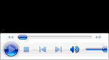

OBJECT 元素定义了一个嵌入的对象。其引入的初衷是取代 IMG 和 APPLET 元素。不过由于安全等各方面原因以及缺乏浏览器支持，这一初衷并未实现。浏览器的对象支持依赖于对象类型。然而，即便是相同的对象类型，各主流浏览器也都使用了不同的代码来加载。
classid 属性用于指定对象实现的 URI 地址。它可能用来替代或者配合 data 属性，这由引入的对象决定。
codebase 属性指定了一个为 classid、data、archive 属性的相对 URI 提供基本路径。缺省情况下，这个值为当前文档的基本 URI。
type 属性定义被定义在 data 属性中指定的文件中出现的数据的 MIME 类型。
关于 OBJECT 元素及其属性的详细信息，请参考 HTML4.01 规范 13.3 Generic inclusion: the OBJECT element 中的内容。
只有 IE 中可以使用 classid 与 codebase 属性结合完成下载、安装和使用 ActiveX 插件。
而即使使用了在 Chrome 与 Safari 中同样支持的利用 classid 属性引入 Media Player 插件，但同时又设置了 type 属性为 application/x-oleobject，则这时仅仅在 IE 中可以正常地引入插件
该问题将造成插件在某些浏览器中不能正常使用。
| IE6 IE7 IE8 |
|---|
IE 对于 classid 属性有自己的解释方式：类标识符（class identifier）。格式形如：clsid:XXXXXXXX-XXXX-XXXX-XXXX-XXXXXXXXXXXX。类标识符由
ActiveX 组件注册在 Windows 的系统注册表中。
codebase 属性则为该类标识符所对应的 ActiveX 插件的 URI 地址。一般是一个 .cab 安装包。
由于 IE 支持 OLE 技术，所以在其 type 属性的类型列表中支持一种其专有的 application/x-oleobject 类型。
更多信息请参考 MSDN CLASSID Attribute | classid Property 和 Class Identifier 中的内容。
分析以下代码：
<object width="100" height="100"
classid="clsid:78ABDC59-D8E7-44D3-9A76-9A0918C52B4A"
codebase="downloader.cab#version=1,0,0,0"></object>
代码中 OBJECT 元素设置了 classid 及 codebase 属性，这两个属性对应的是一个 ActiveX 插件。
在各浏览器中运行这个页面，而非 IE 浏览器没有任何反应。只有 IE 中可以弹出如下的下载及安装提示：
可见，在非 IE 浏览器中无法支持这种插件引入方式。
分析以下代码：
<div style="width:180px; height:100px; background:gray;"> <object id="oo"
style="width:100%; height:100%;"
classid="clsid:6BF52A52-394A-11d3-B153-00C04F79FAA6" type="application/x-oleobject"> </object> </div>
上面代码创建了一个 OBJECT 元素，OBJECT 元素通过 classid 定义其嵌入对象为 Windows 下的 Media Player，并设置了其 type 属性为 application/x-oleobject。
这段代码在各浏览器中运行效果如下：
| IE6 IE7 IE8 | Chrome | Safari | Firefox Opera |
|---|---|---|---|
|  |
可见：
ActiveX 为微软专有技术，仅被 Windows 中的 IE 支持。所以若希望这类组件可以运行于多种浏览器，则需要使用其他非 IE 支持的 NPAPI 重新设计在这种接口下的插件。以保证最好的兼容性。
type="application/x-oleobject" 这种仅 IE 支持的类型也应避免使用。在页面中引入媒体文件，可以考虑使用 Flash，或者合理的利用 IE 对 Media Player 的支持及其其他浏览器对 HTML5 的新标签 VIDEO 与 AUDIO 元素的支持在不同浏览器中达到相类似的效果。
| 操作系统版本: | Windows 7 Ultimate build 7600 |
|---|---|
| 浏览器版本: |
IE6
IE7 IE8 Firefox 3.6.3 Chrome 6.0.422.0 dev Safari 4.0.5 Opera 10.53 |
| 测试页面: | oleobject.html |
| 本文更新时间: | 2010-07-09 |
OBJECT Media Player classid 插件 application oleobject codebase